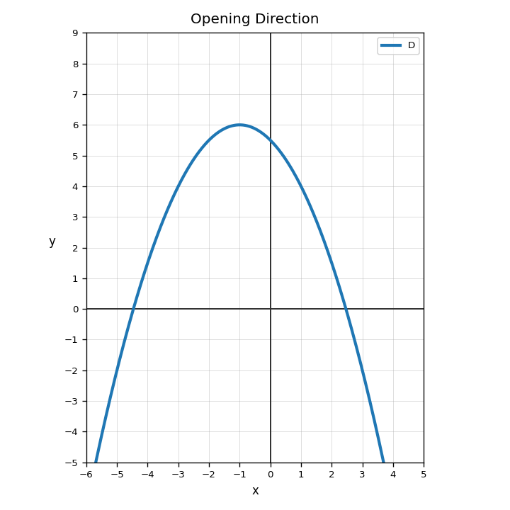
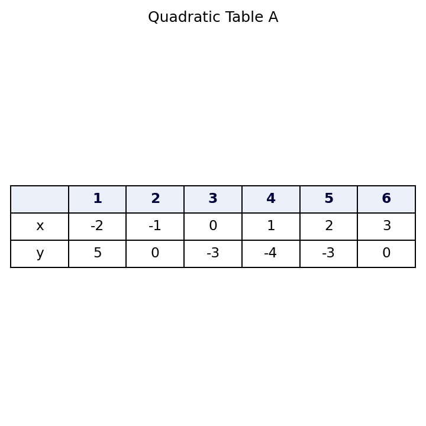
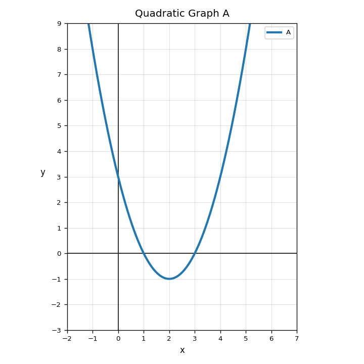

For a quadratic graph, what is the vertex?
Use Graph D. Does the parabola open up or down?

Use Table A. What can you say about the $x$-intercepts and the lowest point?

Explain how you can tell that Graph A could represent the equation $y=x^2-4x+3$ without using a calculator.

How many terms are in $$5x^2-4x+6$$?
Identify the degree of $$8x^4-3x^2+1$$.
Which term is like $7x^2$?
Multiply: $$4x(3x)$$
Subtract and simplify.
$$(6x^2+2x-5)-(x^2-3x+7)$$
Multiply and simplify.
$$(2x+1)(x+6)$$
Why does $(x+4)^2$ not simplify to $x^2+16$?
Write a product form and an expanded form for a polynomial that has a constant term of $12$. Explain your choices.
Identify the transformation in $g(x)=0.5f(x)$.
What transformation changes every output to its opposite?
Which equation shows a vertical compression and reflection?
Explain why multiplying a function rule by $-1$ changes the graph but does not change the input values.